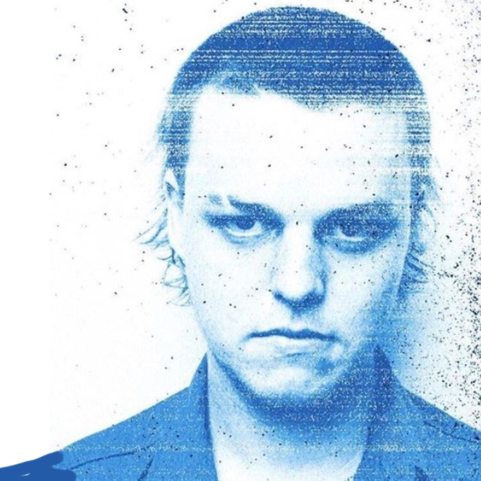

Russell Boring, better known as (JOBA) is a American singer, rapper, songwriter,
sound engineer, and record producer best known for being a member, rapper, singer,
audio engineer, and producer of the American boyband BROCKHAMPTON.He has produced numerous tracks by the group such as "GUMMY", "JUNKY", and "TEAM".